I'm postdoc in the Imaging Science Laboratory (Department of Electrical and Computer Engineering, Universidad Nacional del Sur), and my workplace is at the National Patagonian Center CCT-CONICET CENPAT as a member of the Human Evolutionary Biology Research Group GIBEH-IPCSH (Patagonian Institute of Social and Human Sciences) in Puerto Madryn, Argentina with a CONICET postdoctoral fellowship. I also teach Introduction to Python and Advanced Python at the Universidad Provincial del Sudoeste.
I have an undergraduate degree in Electronic Engineering from Universidad Surcolombiana (2014) and a certificate in Project Management (Politécnico de Colombia, 2015). I was a professor for 2 years in a technical institute (2015) and worked at some companies as a programmer analyst and software developer (2017).
I'm currently researching deep learning-based highly performance algorithms for 3D anthropometric reconstruction with applications in biological anthropology, medicine and forensic sciences.
My research is focused on these topics/tools: 2D and 3D Imaging Processing, Data Science, Computer Vision, Machine Learning / Deep Learning.
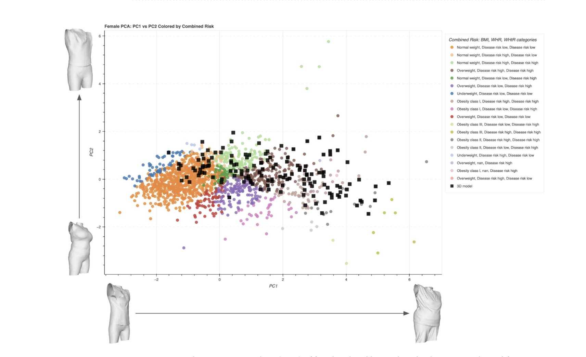
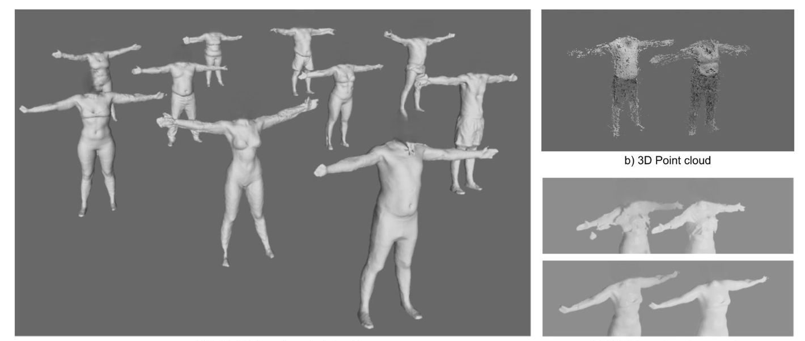
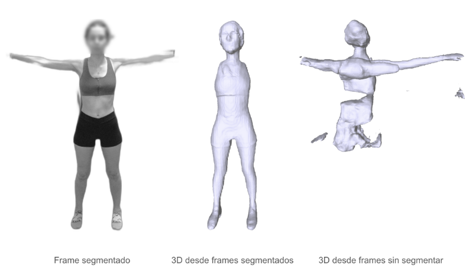
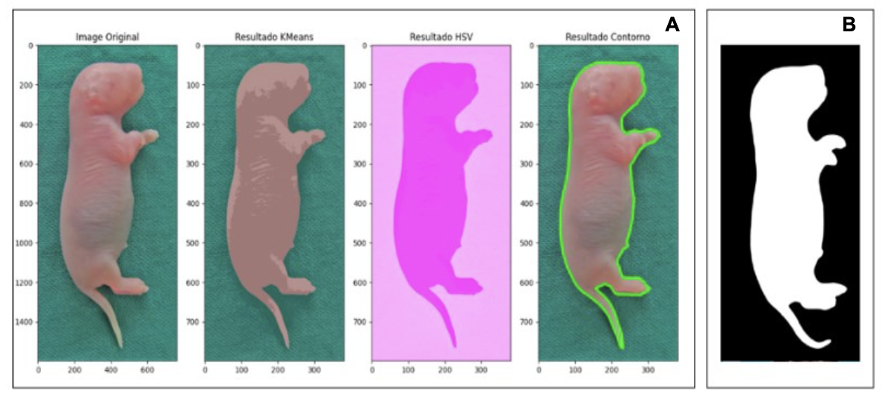
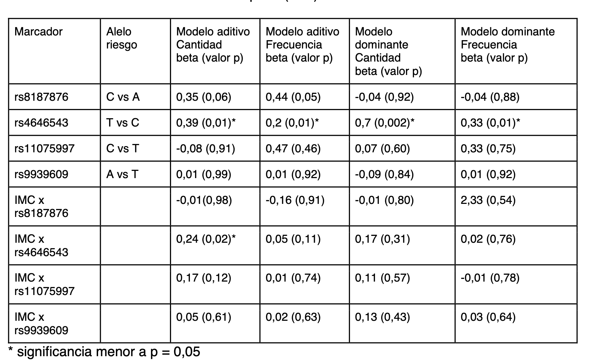
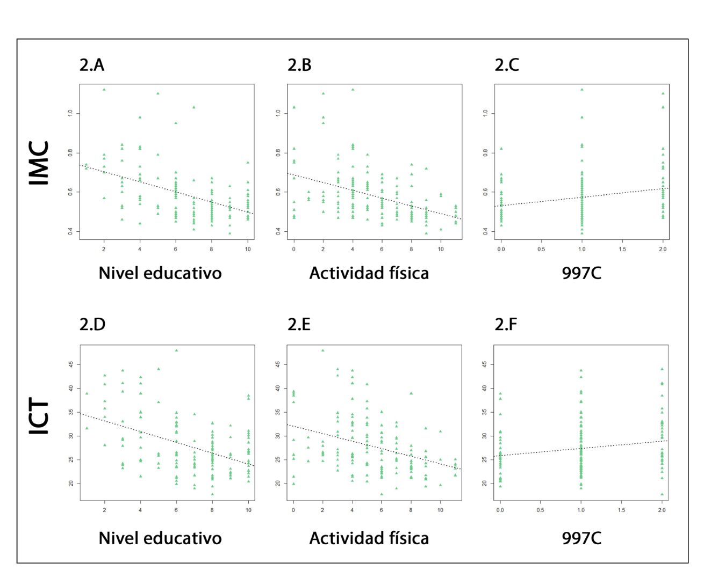
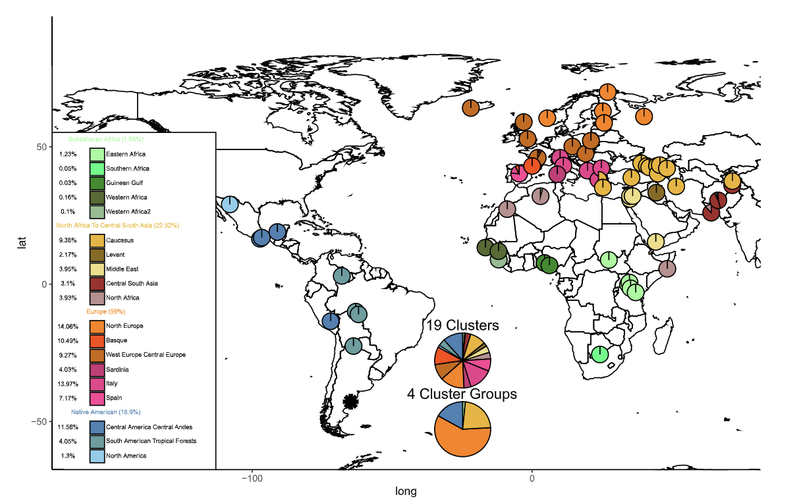
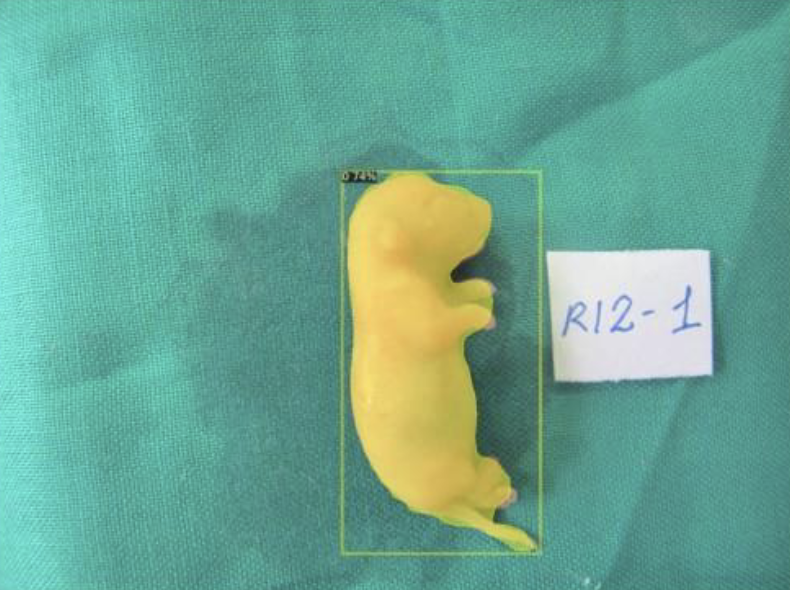
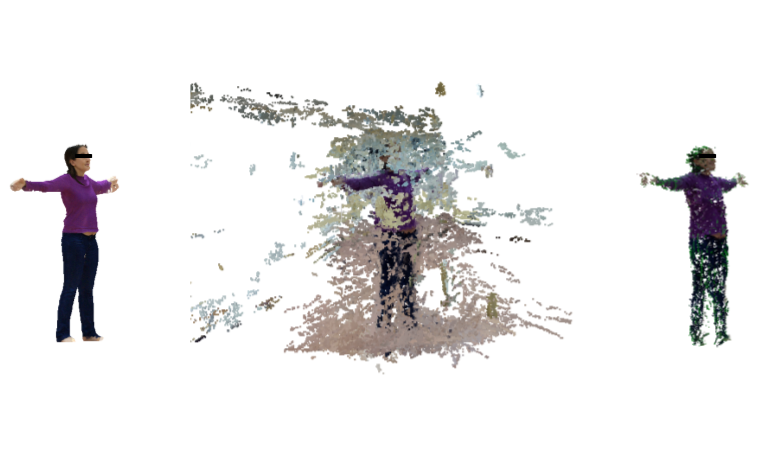
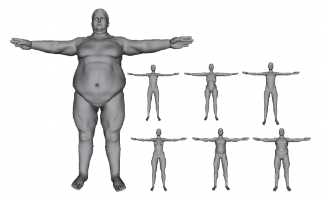
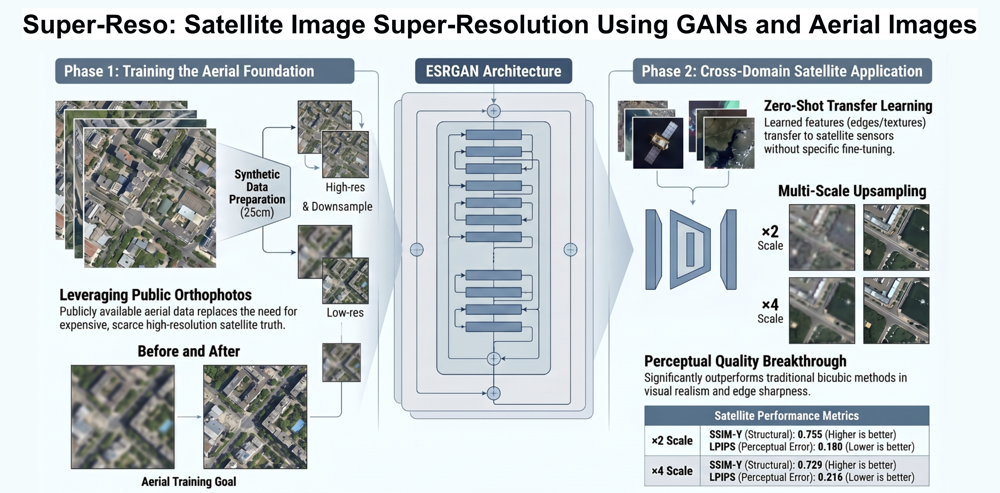
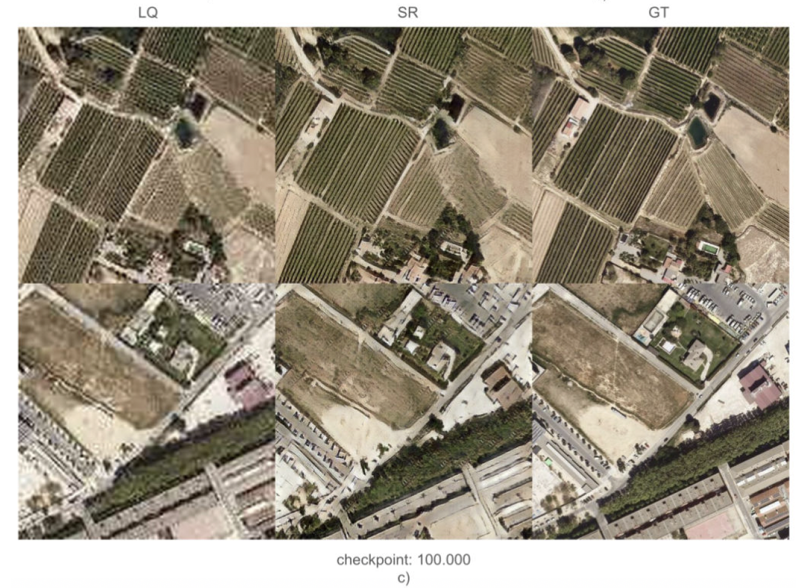
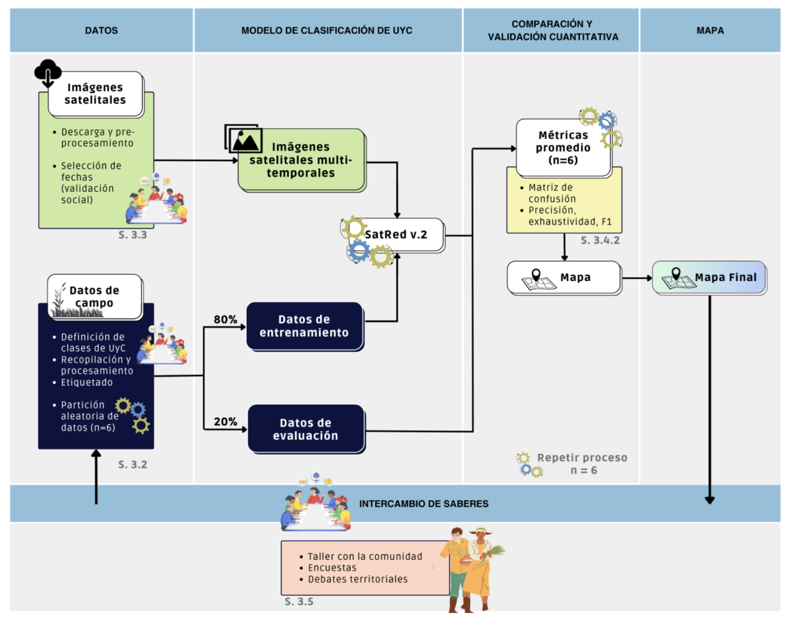
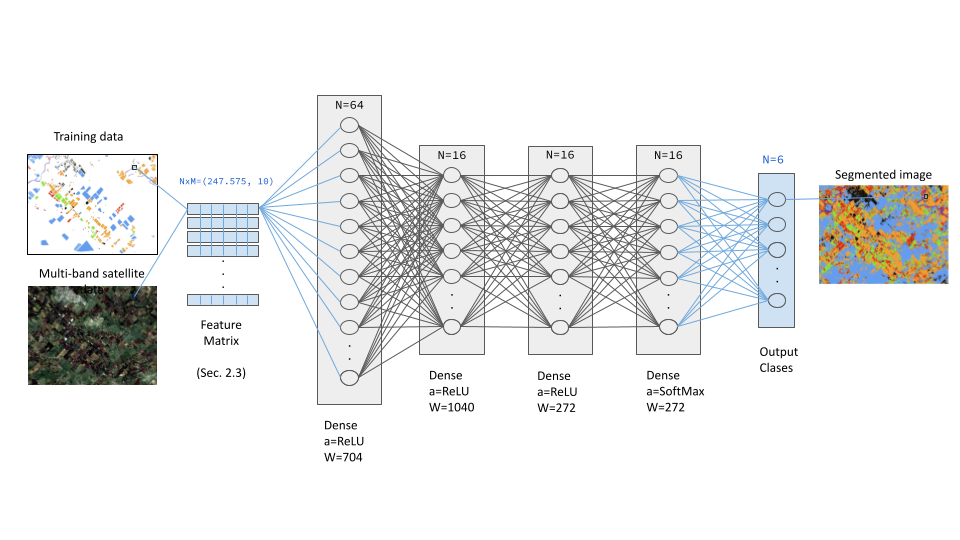
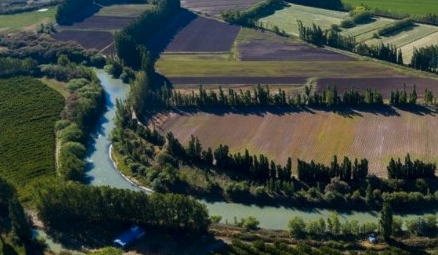
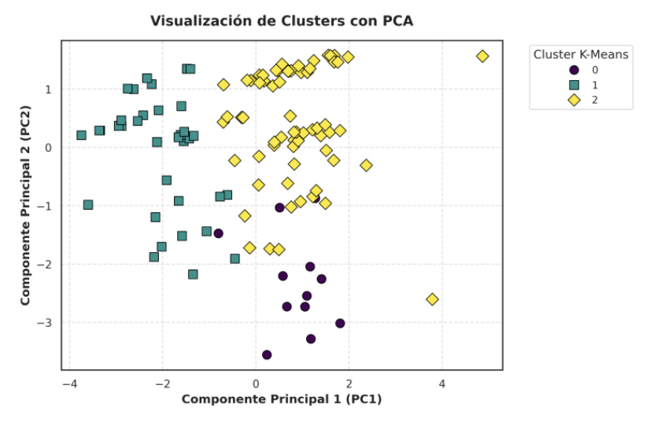
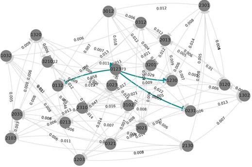
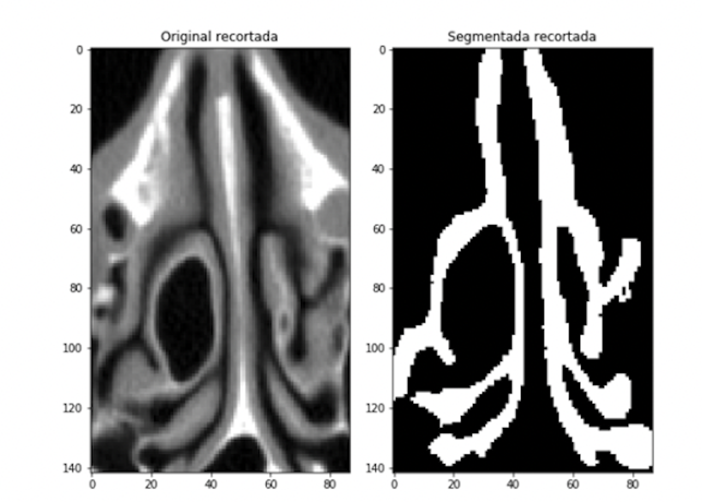
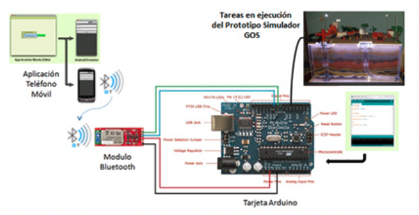